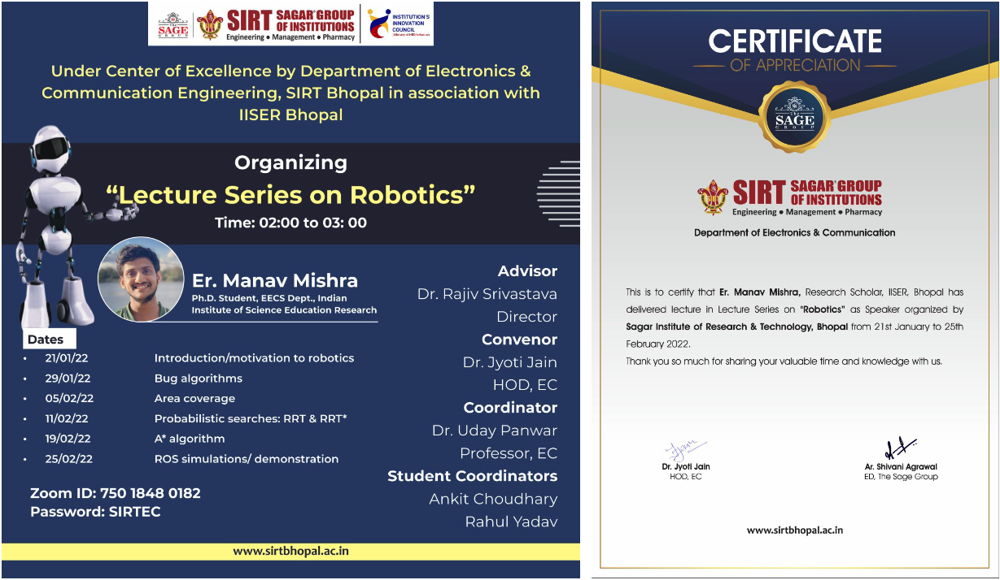

Teaching Activities
Outreach teaching assistant duties
I was invited to conduct a six-lecture course series on Introduction to Robotics under the initiative of the Center of Excellence by Department of Electronics and Communication Engineering, Sagar Institute of Research and Technology (SIRT) Bhopal. The lecture series was aimed for students of 2nd and 3rd year of ECE Department at Sagar Institute of Research and Technology (SIRT) Bhopal. The mode of teaching was online via zoom meeting links. The course duration was from 21st January 2022 till 25th February 2022.
The course objectives were to understand the working principles of different robots and sensor systems and to have a solid foundation in robotic motion planning. Also, the objectives included the ability to design intelligent algorithms for robot navigation in different environments as well as having a hands-on experience in implementing sensing, localization, and navigation algorithms in simulations. The course was divided into six lectures. The first lectures was an introduction to robotics and the fundamentals of robotics. The next two lectures were an introduction to bug algorithms for point to point navigation using tactile sensors and about different area decomposition and coverage methods. The fourth and fifth lectures were focused on probabilistic searches using RRT/RRT* algorithms in continuous spaces and A* algorithm for discrete search problems. The final lecture was on ROS simulation demonstrations of what was covered in the previous lectures.
Inhouse teaching assistant duties
I was a teaching assistant for the course Reinforcement Learning offered by the Data Science and Engineering (DSE) Department at IISER Bhopal from January-May 2022. The course was conducted by Prof. P.B. Sujit. The course objectives were to understand the key concepts of Reinforcement learning and modern algorithms to implement them. The course was conducted in hybrid mode - partly online and offline mode. This was a 300 level course offered to BS students studying in 5th semester and above at IISER Bhopal.
My main contribution as a TA was taking up around 8-10 regular class lectures on reinforcement learning. Apart from that, I had also conducted three tutorial classes to give the students a hands-on experienced on RL algorithm implementation. I was also involved in preparing up the course assignments and final semester projects. Other duties included assisting the course instructor in paper correction and invigilation duties.
I was also a teaching assistant for the course Discrete Mathematics offered by the Electrical Engineering and Computer Science (EECS) Department at IISER Bhopal from August-December 2021. The course was conducted by Prof. Shashank Singh. The course objectives was to provide students an overview of discrete mathematics. The course included topics such as logic and proofs, sets and functions, probability, recursion, graph theory, matrices, Boolean algebra and other important discrete math concepts. This course was conducted in online mode. This was a 200 level course offered to BS-MS students studying in the 3rd semester and above at IISER Bhopal.
My main duties as a TA involved in assisting the course instructor in paper correction and invigilation duties.